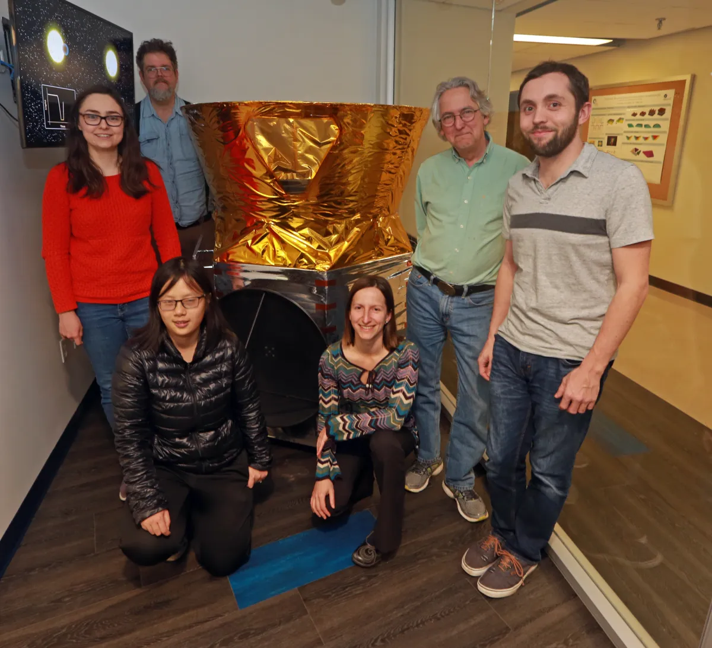
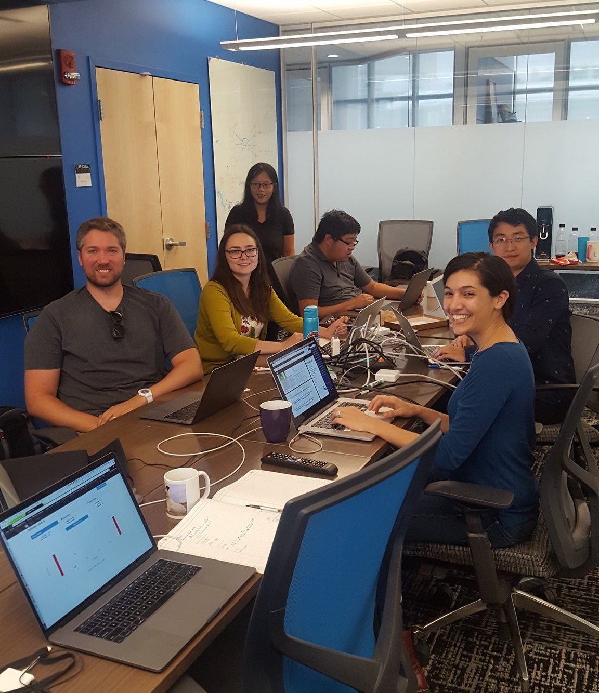
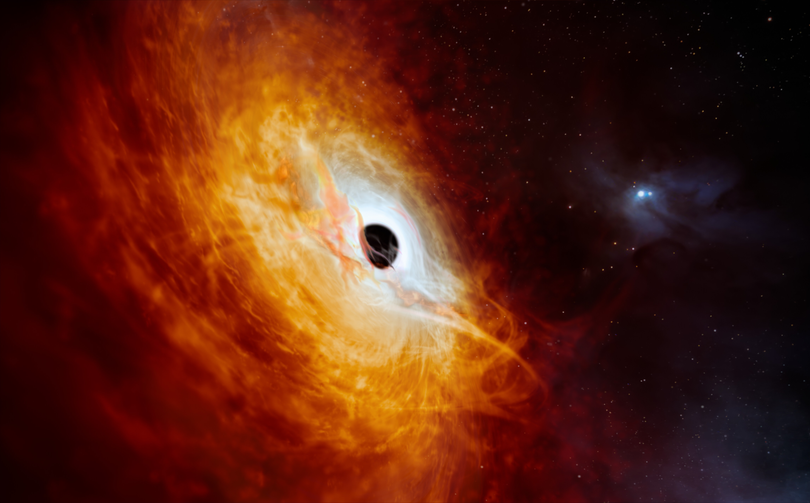

Education
Massachusetts Institute of Technology
Ph.D. in Planetary Science, February 2024B.S. in Physics, June 2016

Exoplanet and Astrobiology Research at MIT
I have spent over a decade at MIT. In February 2024, I completed my Ph.D. in Planetary Science in the Department of Earth, Atmospheric and Planetary Science under the supervision of Prof. Sara Seager. Through my thesis projects, I evaluated how we can characterize exoplanet atmospheres using isotopologues. I assessed the detectability and usefulness of carbon fractionation as both a potential biosignature and as a tracer of planetary formation processes. Furthermore, I simulated our planned observations of TRAPPIST-1 e and b to determine which molecular species we would be able to constrain and to ascertain the limitations of our planned observations. As a complementary project, I also conducted experiments with ancient analog cyanobacteria in Prof. Tanja Bosak's lab. I evaluated how the rise of oxygen in Earth's atmosphere may have impacted the evolution of early life. As a postdoctoral researcher at MIT, I am now working with JWST data to characterize planets that range from rocky and temperate to hot and gaseous. I am currently developing new methods to rigorously constrain the atmospheric properties of these planets.

The Transiting Exoplanet Survey Satellite (TESS)
After earning my B.S. in Physics at MIT in 2016, I worked as a software engineer on NASA's Transiting Exoplanet Survey Satellite (TESS) prior to launch and through commissioning. I operated the four TESS flight cameras to assess their performance and focus; developed software to support the Payload Operations Center (POC); and later served as Deputy Manager of the POC. As a member of the TESS Objects of Interest Steering Committee, I helped develop the software and processes to vet and prioritize exoplanets candidates discovered by the mission. For my work, I was awarded the NASA Silver Achievement Medal. TESS inspired me to return to graduate school to study exoplanets and their atmospheres in greater detail. To date, TESS has discovered over 600 nearby planets, many of which are ideal targets for atmospheric reconnaissance with JWST.

Extragalactic Research
As an undergraduate, I gained research experience across several areas of astrophysics. I worked with Prof. Fiona Harrison at Caltech on high-energy X-ray astronomy with NuSTAR; with Dr. Martin Elvis at the CfA on observations and modeling of active supermassive black holes; and with Prof. Rob Simcoe at MIT/MKI on early-universe galaxy evolution.
These early projects gave me a strong foundation in modeling, astronomical observations, spectroscopy, and data analysis, which I now apply to the study of exoplanet atmospheres.